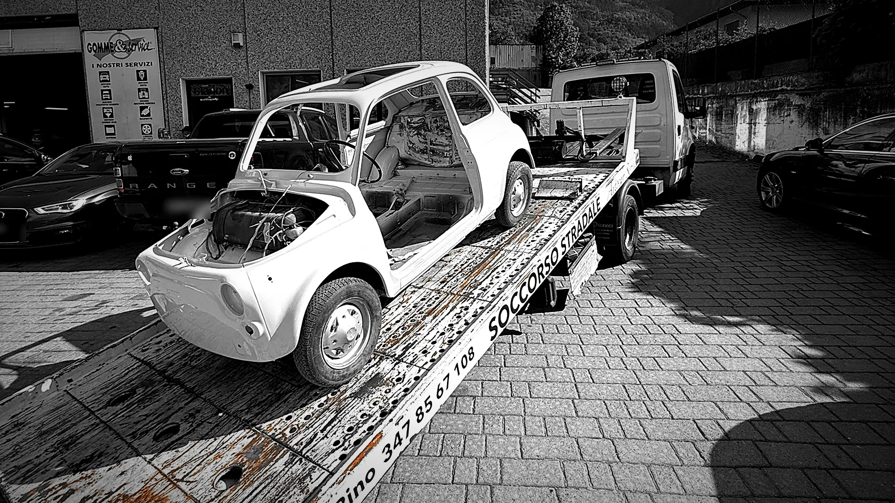
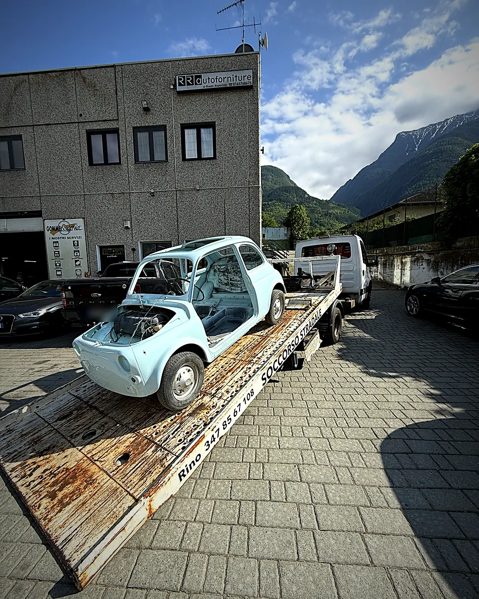
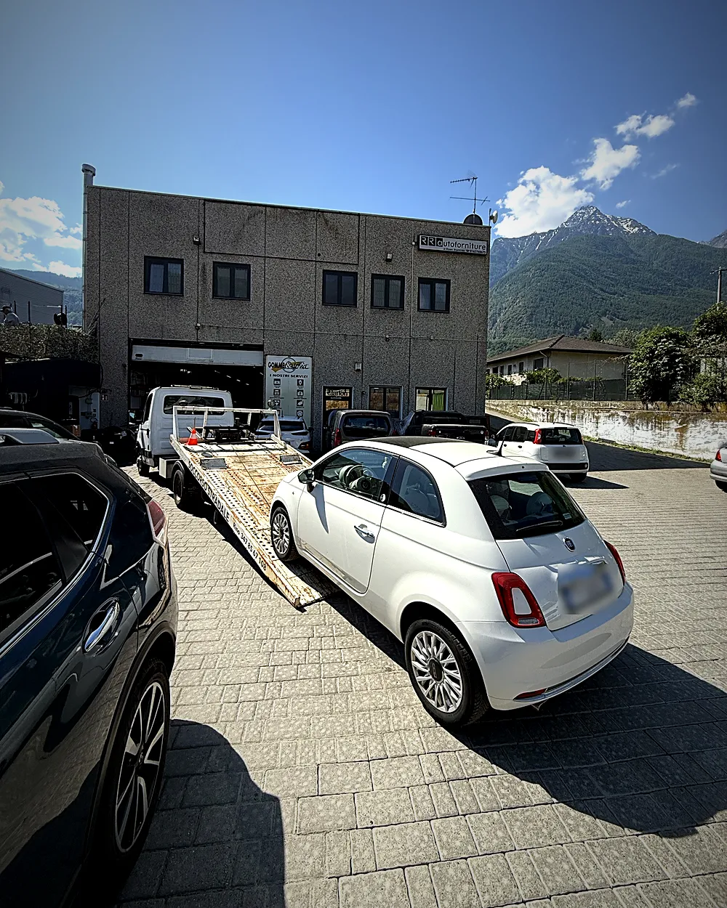
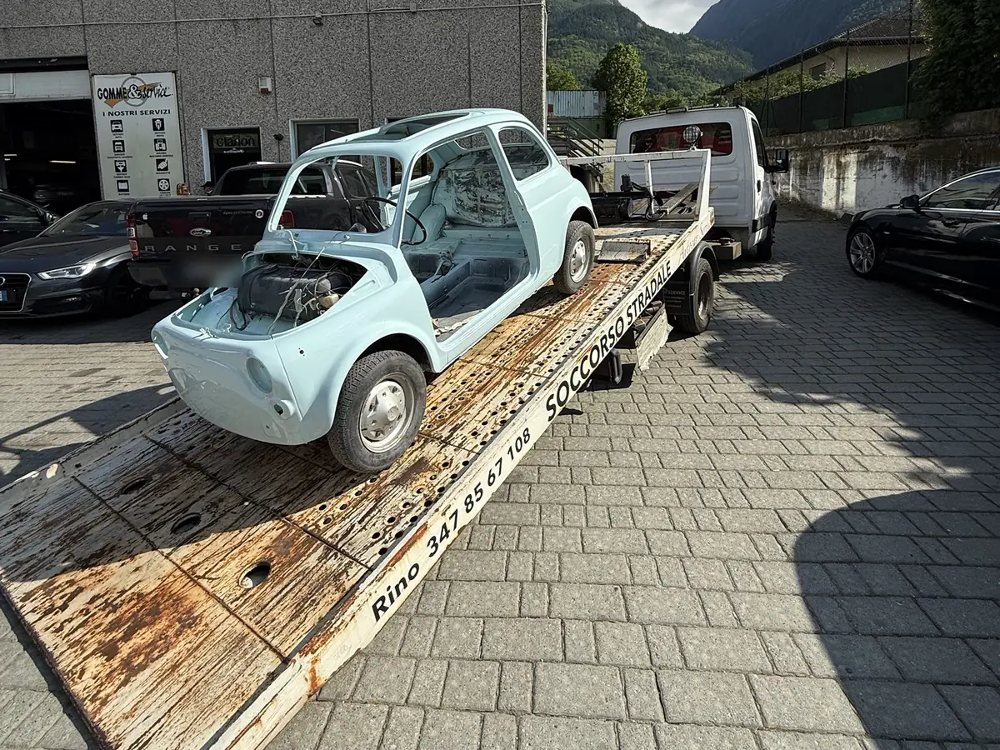
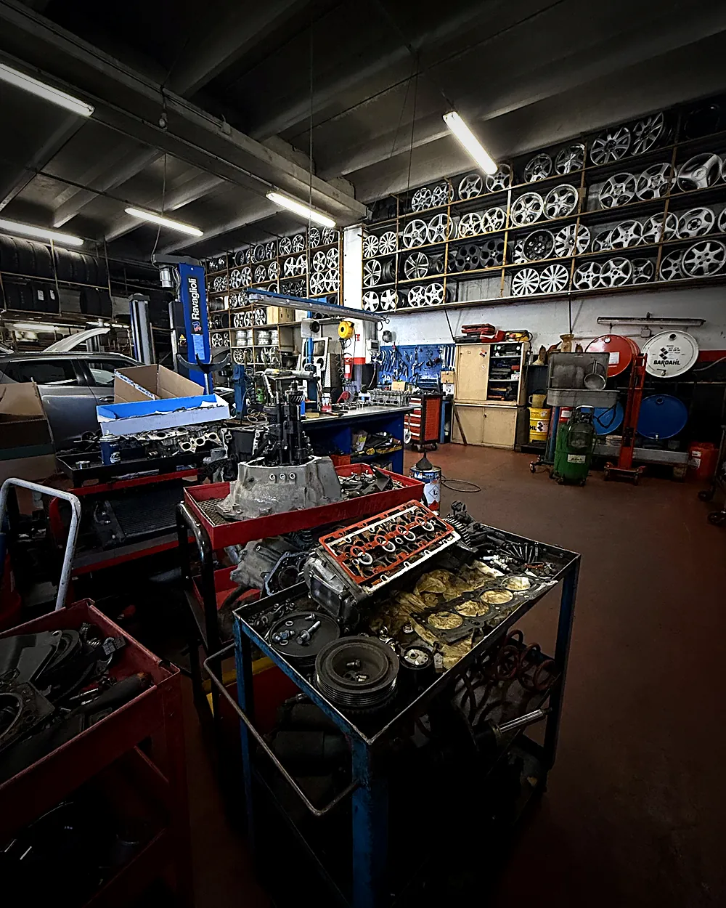

Carro attrezzi Aosta
Recupero auto in panne ad Aosta e in media valle, con l’officina a Saint-Marcel
Auto ferma o da spostare? Chiama il 347 856 7108: veniamo con il nostro carro e la portiamo direttamente in officina.
Un numero solo. Il carro e l’officina.
Quando l’auto si ferma non devi cercare un carro attrezzi, poi un’officina, poi metterli d’accordo. Ci chiami, la carichiamo noi e la portiamo a Saint-Marcel: chi la recupera è chi la ripara. Da Aosta siamo a circa un quarto d’ora.
- Carro attrezzi nostro, a pianale
- L’auto arriva dritta in officina
- Preventivo scritto prima di riparare
Soccorso stradale, caso per caso.
-
01
Auto in panne
Non parte, si è fermata per strada, spia rossa accesa: la carichiamo e la portiamo in officina.
-
02
Guasto in viaggio
Rimasto fermo tra Aosta e la media valle? Ci dici dove sei e veniamo con il carro.
-
03
Gomma o ruota danneggiata
Se non si riparte sul posto, l’auto arriva direttamente al nostro reparto gomme.
-
04
Auto d’epoca e sportive
Carro a pianale: auto basse e d’epoca caricate con attenzione, senza strappi.
-
05
Trasporti programmati
Auto ferma da tempo o non marciante da portare in officina per un lavoro: si fissa giorno e ora.
Aosta e la media valle.
Il carro parte da Saint-Marcel, Zona Industriale 9. Questi sono i comuni dove andiamo più spesso; se sei altrove in Valle d’Aosta chiama e ti diciamo subito.
- Aosta
- Saint-Marcel
- Quart
- Saint-Christophe
- Pollein
- Brissogne
- Nus
- Fénis
- Chambave
- Verrayes
- Châtillon
- Saint-Vincent
Foto vere, dal nostro piazzale.
Il carro è quello con il numero scritto sul pianale. Tocca una foto per vederla grande.




Dalla strada all’officina.
- 01
Chiami
Il 347 856 7108: dicci dove sei e cosa è successo. Se puoi, manda la posizione su WhatsApp.
- 02
Arriva il carro
Ti diciamo prima quanto costa e quando arriviamo, poi carichiamo l’auto sul pianale.
- 03
In officina
Controlliamo l’auto e ti facciamo il preventivo scritto. Si ripara solo dopo il tuo sì.
- 04
Riconsegna
Ti ridiamo l’auto spiegandoti cosa abbiamo fatto.
Le cose che ci chiedono quando l’auto si ferma.
Non trovi la tua? Chiamaci, ti rispondiamo noi.
Sì. Il carro parte da Saint-Marcel, a circa un quarto d’ora da Aosta: copriamo Aosta città e i comuni della media valle, da Quart e Saint-Christophe fino a Châtillon. Se sei più lontano chiamaci e ti diciamo subito se riusciamo.
Dipende da dove sei e da dove va portata l’auto. Te lo diciamo al telefono prima di partire, così sai la cifra prima che il carro si muova.
Il 347 856 7108, lo stesso scritto sul carro. Puoi anche mandarci la posizione su WhatsApp allo stesso numero: ci aiuta ad arrivare prima.
Noi, nella stessa sede: officina meccanica, elettrauto e gommista. Prima di toccare l’auto ti facciamo il preventivo scritto, e si lavora solo dopo il tuo sì.
Sì. Il carro è a pianale: carichiamo anche auto d’epoca, sportive basse o auto ferme da tempo da portare in officina per un lavoro. In questi casi si organizza il trasporto con calma, su appuntamento.
Dopo il carro, l’officina.


Auto ferma?
Chiama il carro.
Officina: Zona Industriale 9, Saint-Marcel (AO) · Lun-Ven 8:00-13:00 e 15:00-19:00 · Sab 8:00-12:30